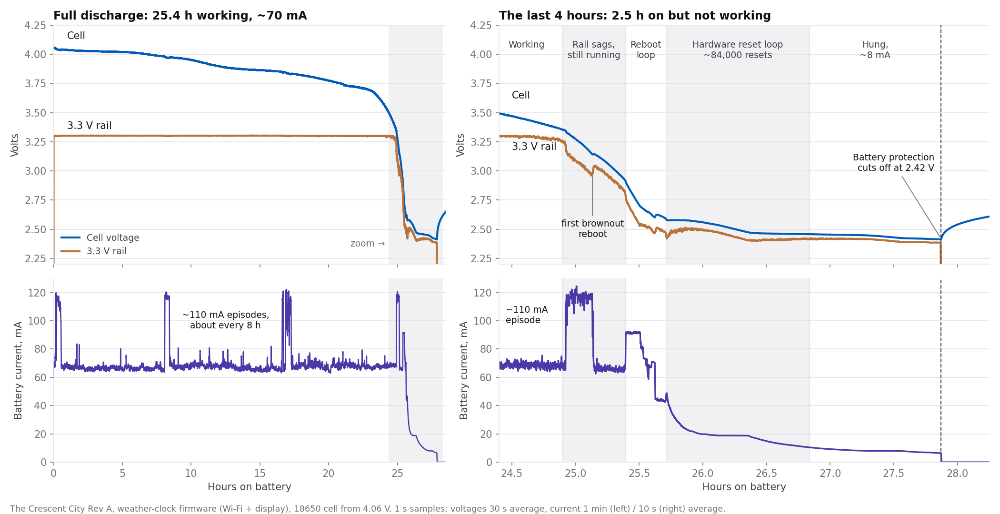
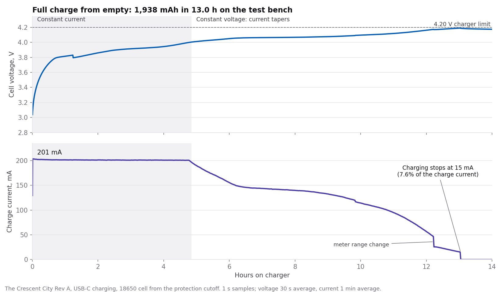

Summary
120 of 122 tests pass
Every planned test was run on the V1.0 prototypes. The two failures — a USB part and a tight breadboard fit — are explained under Findings. The numbers most people ask about:
Weather Clock, Wi‑Fi on, ≈70 mA
V2.0: ≈300 mA
on battery
then ≈1 µA
Findings
What we found, and what changed for V2.0
Battery life: about 14 hours per 1000 mAh
ConfirmedBattery run · October 2026
With the Weather Clock running and Wi‑Fi always on, the board averages about 70 mA. A full discharge of a real cell confirmed the estimate (see below). For multi-day battery life, use deep sleep (0.88 mA) between updates.
When the battery runs out, the board keeps rebooting
Fix in V2.0 firmwareBattery run · October 2026
For its last 2.5 hours on battery the board was on but not working: it rebooted over and over, then hung, until the battery protection cut off at 2.42 V. The V2.0 firmware adds a low-battery shutdown: it shows a low-battery screen and sleeps until the board is charged. No hardware change is needed.
Charging works as designed
PassCHG · 8 of 8 pass
Charge current 201 mA (design value 196 mA), full-charge voltage 4.20 V, and a clean stop at 15 mA with no restart. A full charge from empty is about 5 hours per 1000 mAh. V2.0 raises the charge current to about 300 mA.
USB did not connect on the first prototypes
FixedMCU-001 · fail
The USB protection part on the first prototype boards blocked the USB data lines. After rework, USB connects and flashes normally, and USB is checked on every board in the factory test.
Tight fit in a breadboard
Re-check on V2.0VIS-011 · fail
The header rows are on the standard 2.54 mm grid; the pins tilted slightly when the headers were soldered, so the board takes extra force to press in. Breadboard fit is re-checked on the V2.0 boards.
Smaller changes for V2.0
DoneVIS-003 · VIS-007
Pin labels are now printed on the front as well as the back, and the battery connector is a JST‑PH 2.0 mm that sits flush with the board edge (V1.0 used JST‑XH).
Battery & power
Battery life, low-battery behavior and charging
A full battery discharge
A V1.0 board ran the Weather Clock on a single Li‑ion cell (18650, 4.06 V at the start) until the battery protection switched it off. Current, cell voltage and the 3.3 V rail were logged every second for 28 hours.


- 25.4 hours working at about 70 mA. The 3.3 V rail held steady the whole time.
- Then 2.5 hours on but not working. As the cell ran low, the 3.3 V rail sagged and the board rebooted hundreds of times, then kept resetting before the firmware could start, and finally hung at about 8 mA.
- Protection cutoff at 2.42 V. The battery protection disconnected the cell; the board then draws about 1 µA.
- The fix is firmware. The board already measures its battery voltage, so the V2.0 firmware shuts down cleanly before the rail starts to sag. That gives up about 30 minutes of runtime.
Where the current goes
Most of the 70 mA is the Wi‑Fi radio staying connected; the display, sensor and processor add little. When network traffic keeps the radio awake the current rises to about 110 mA, and short transmit pulses reach 400 mA for microseconds without disturbing the 3.3 V rail. Deep sleep between updates (0.88 mA) is the way to multi-day battery life.
Charging
The same V1.0 board then charged the same cell from empty to full over USB‑C, again logged every second.


- Constant current: 201 mA against a 196 mA design value.
- Full-charge voltage: 4.20 V. The charger holds it while the current tapers.
- Charging stops at 15 mA (7.6% of the charge current), as designed, and did not restart overnight.
- 1,938 mAh in 13.0 hours on the test bench. The bench wiring added about 1 Ω, which starts the taper early. With the cell plugged straight into the board we estimate about 10 hours for this cell, roughly 5 hours per 1000 mAh.
How we tested
- Current: a power profiler in the battery or USB supply line, 1 sample per second (100,000 per second for short traces).
- Voltage: a data logger on the cell, the board’s battery input and the 3.3 V rail, 1 sample per second.
- Firmware: the Weather Clock that ships on the board, plus a heartbeat output and a serial status line to mark exactly when it stopped working.
- Data: full discharge and full charge, 10-second averages (CSV).
All tests
Every test, by subsystem
Open a subsystem, then tap a test to see what was expected and what was measured.
VIS · Visual & mechanical inspection
10 pass1 fail
VIS-001Overall solder quality: tombstones, missing parts, obvious bridgespassPass
Expected: None
Measured: pass
Tracker VIS-001 · Plan §VIS-01
VIS-002D2, D3 polarity: cathode band toward V_SYS sidepassPass
Expected: Bands correct on both
Measured: pass
Tracker VIS-002 · Plan §VIS-02
VIS-003Pin-1 orientation vs silk: U1, U5, U6, D1, Q1, Q2, Q3passPass
Expected: All correct
Measured: pass
Tracker VIS-003 · Plan §VIS-03
VIS-004ESP32 module: aligned, castellations wetted, antenna cleanpassPass
Expected: Clean
Measured: pass
Tracker VIS-004 · Plan §VIS-04
VIS-005USB-C J1: all 16 pins wetted, no bridges, anchors solderedpassPass
Expected: Clean
Measured: pass
Tracker VIS-005 · Plan §VIS-05
VIS-006FPC1: 0.5 mm pins no bridges, actuator latch intactpassPass
Expected: Clean
Measured: pass
Tracker VIS-006 · Plan §VIS-06
VIS-007J2 battery conn: seated flat; J4/J5 headers straightpassPass
Expected: Clean
Measured: pass
Tracker VIS-007 · Plan §VIS-07
VIS-008SW1/SW4 buttons click mechanicallypassPass
Expected: Both click
Measured: pass
Tracker VIS-008 · Plan §VIS-08
VIS-009Board: no deep scratches, mousebite quality acceptablepassPass
Expected: OK
Measured: pass
Tracker VIS-009 · Plan §VIS-09
VIS-010Connect the OLED screen and frame, check the fitpassPass
Expected: OK
Measured: pass
Tracker VIS-010 · Plan §VIS-10
VIS-011Plug the board in breadboard, check the fitFailFail
Expected: Fail
Measured: Fail
Notes: The header spacing is a little off, which makes it hard to push the board in the breadboard.
Tracker VIS-011 · Plan §VIS-11
PRE · Unpowered electrical checks
12 pass
PRE-001V_USB → GND resistance (probe D3.2)5.8k ΩPass
Expected: ≈ 9–10 kΩ, not < 1 kΩ
limits 1000 – +∞ Ω
Measured: 5.8k Ω
Tracker PRE-001 · Plan §PRE-01
PRE-002V_SYS → GND (probe D2.1)224k ΩPass
Expected: High / climbing (> 50 kΩ)
limits 50000 – +∞ Ω
Measured: 224k Ω
Tracker PRE-002 · Plan §PRE-02
PRE-0033V3 → GND (probe J4.2)42k ΩPass
Expected: > 5 kΩ and climbing (no short)
limits 5000 – +∞ Ω
Measured: 42k Ω
Tracker PRE-003 · Plan §PRE-03
PRE-004+5V pin (J5.12) → GND258k ΩPass
Expected: > 10 kΩ
limits 10000 – +∞ Ω
Measured: 258k Ω
Tracker PRE-004 · Plan §PRE-05
PRE-005Diode mode: red on D3.2 (V_USB), black on D2.1 (V_SYS)0.2 VPass
Expected: 0.15–0.40 V (SS34 forward)
limits 0.15 – 0.4 V
Measured: 0.2 V
Tracker PRE-005 · Plan §PRE-06
PRE-006Diode mode reversed: red on V_SYS, black on V_USBPass
Expected: OL
Tracker PRE-006 · Plan §PRE-07
PRE-007Diode mode: red on J5.12, black on V_SYS0.2 VPass
Expected: 0.15–0.45 V (F1 + D2 forward)
limits 0.15 – 0.45 V
Measured: 0.2 V
Tracker PRE-007 · Plan §PRE-08
PRE-008USB D+ ↔ D− (D1.1 ↔ D1.3)100 MΩPass
Expected: OL / > 1 MΩ (no short)
limits 1 M – +∞ Ω
Measured: 100 MΩ
Tracker PRE-008 · Plan §PRE-09
PRE-009USB VBUS ↔ D+ and VBUS ↔ D−Pass
Expected: No short
Tracker PRE-009 · Plan §PRE-10
PRE-010J2.1 ↔ J2.2 (battery pins)Pass
Expected: No short (> 100 kΩ)
limits 100000 – +∞ Ω
Tracker PRE-010 · Plan §PRE-11
PRE-011Diode mode: red on C3.2 (BATT+), black on J2.10.35 VPass
Expected: ≈ 0.4–0.7 V (Q3 body diode)
target 0.55 · limits 0.3 – 0.7 V
Measured: 0.35 V
Tracker PRE-011 · Plan §PRE-12
PRE-012EN → GND / IO0 → GNDPass
Expected: No short
Tracker PRE-012 · Plan §PRE-13
PWR · Power-up & power rails
27 pass
PWR-001Smoke test: Supply current after 5 s (5V 100mA limit)20 mAPass
Expected: 30–90 mA, stable
limits 15 – 90 mA
Measured: 20 mA
Tracker PWR-001 · Plan §PWR-01
PWR-002Smoke test: Current limit NOT hitPass
Expected: No CC indication
Tracker PWR-002 · Plan §PWR-01
PWR-003Smoke test: Components temperature after 60sPass
Expected: < warm
Tracker PWR-003 · Plan §PWR-01
PWR-004Smoke test: Green LED2Pass
Expected: ON
Tracker PWR-004 · Plan §PWR-01
PWR-005Rail voltages: V_SYS (D2.1)4.7 VPass
Expected: 4.5–4.8 V
limits 4.5 – 4.8 V
Measured: 4.7 V
Tracker PWR-005 · Plan §PWR-02
PWR-006Rail voltages: 3V3 (J4.2)3.29 VPass
Expected: 3.25–3.35 V
target 3.3 · limits 3.25 – 3.35 V
Measured: 3.29 V
Tracker PWR-006 · Plan §PWR-02
PWR-007Rail voltages: EN (U2.3)3.28 VPass
Expected: ≈ 3V3
target 3.3 · limits 3.25 – 3.35 V
Measured: 3.28 V
Tracker PWR-007 · Plan §PWR-02
PWR-008Rail voltages: BATT+ (C3.2) without batteryPass
Expected: ~0 V or drifting
Tracker PWR-008 · Plan §PWR-02
PWR-009USB power path: V_USB (D3.2)5.2 VPass
Expected: 4.75–5.25 V
target 5 · limits 4.75 – 5.25 V
Measured: 5.2 V
Tracker PWR-009 · Plan §PWR-03
PWR-010USB power path: V_SYS4.9 VPass
Expected: V_USB − 0.2…0.45 V
Measured: 4.9 V
Tracker PWR-010 · Plan §PWR-03
PWR-011USB power path: 3V33.29 VPass
Expected: 3.25–3.35 V
target 3.3 · limits 3.25 – 3.35 V
Measured: 3.29 V
Tracker PWR-011 · Plan §PWR-03
PWR-012USB power path: Input current idle20 mAPass
Expected: 30–90 mA
limits 15 – 90 mA
Measured: 20 mA
Tracker PWR-012 · Plan §PWR-03
PWR-013USB power path: VUSB_SENSE (U2.38)2.58 VPass
Expected: V_USB ÷ 2 ± 3 %
target 2.5 · limits 2.42 – 2.58 V
Measured: 2.58 V
Notes: Limits assume V_USB = 5.00 V; recompute ±3 % band if V_USB differs
Tracker PWR-013 · Plan §PWR-03
PWR-014USB-C orientation: A-to-C cable plug 1Pass
Expected: Powers on
Tracker PWR-014 · Plan §PWR-04
PWR-015USB-C orientation: A-to-C cable flippedPass
Expected: Powers on
Tracker PWR-015 · Plan §PWR-04
PWR-016USB-C orientation: C-to-C cable plug 1Pass
Expected: Powers on
Tracker PWR-016 · Plan §PWR-04
PWR-017USB-C orientation: C-to-C cable flippedPass
Expected: Powers on
Tracker PWR-017 · Plan §PWR-04
PWR-0183V3 static load: 150 mA across 3V3 and GND3.29 VPass
Expected: ≥ 3.25 V
limits 3.25 – +∞ V
Measured: 3.29 V
Tracker PWR-018 · Plan §PWR-05
PWR-0193V3 static load: 300 mA across 3V3 and GND3.29 VPass
Expected: ≥ 3.20 V
limits 3.2 – +∞ V
Measured: 3.29 V
Tracker PWR-019 · Plan §PWR-05
PWR-0203V3 dynamic droop: TX bursts (scope)50 mVppPass
Expected: < 150 mVpp; min > 3.0 V
Measured: 50 mVpp
Tracker PWR-020 · Plan §PWR-06
PWR-0213V3 dynamic droop: minimum voltage during TX burst (scope)3.27 VPass
Expected: min > 3.0 V
limits 3 – +∞ V
Measured: 3.27 V
Tracker PWR-021 · Plan §PWR-06
PWR-0223V3 dynamic droop: No brownout resets over 5 minPass
Expected: None
Tracker PWR-022 · Plan §PWR-06
PWR-023Min battery: Lowest supply voltage w/ no brownout2.8 VPass
Expected: ≤ 3.3 V
limits −∞ – 3.3 V
Measured: 2.8 V
Tracker PWR-023 · Plan §PWR-07
PWR-024Min battery: Voltage where board browns out2.45 VPass
Expected: Record
Measured: 2.45 V
Tracker PWR-024 · Plan §PWR-07
PWR-025Sleep current: @ 3.8 V0.884 mAPass
Expected: ≈ 0.6–0.9 mA
limits 0.6 – 0.9 mA
Measured: 0.884 mA
Tracker PWR-025 · Plan §PWR-08
PWR-026Sleep current: Same with LED2 lifted115 µAPass
Expected: < 120 µA
limits −∞ – 120 µA
Measured: 115 µA
Tracker PWR-026 · Plan §PWR-08
PWR-027+5V pin is input-only: Voltage at J5.120 VPass
Expected: ≈ 0 V / floating
target 0 · limits −∞ – 0.5 V
Measured: 0 V
Tracker PWR-027 · Plan §PWR-09
CHG · Battery charger
8 pass
CHG-001Fast-charge current into battery198 mAPass
Expected: 170–250 mA
target 196 · limits 170 – 240 mA
Measured: 198 mA
Tracker CHG-001 · Plan §CHG-01
CHG-002PROG pin (U5.5) voltage during fast charge0.998 VPass
Expected: ≈ 1.0 V
target 1 · limits 0.9 – 1.1 V
Measured: 0.998 V
Tracker CHG-002 · Plan §CHG-02
CHG-003Yellow LED1 during chargePass
Expected: ON
Tracker CHG-003 · Plan §CHG-03
CHG-004BATT+ plateau near end of charge4.18 VPass
Expected: 4.168–4.232 V
target 4.2 · limits 4.168 – 4.232 V
Measured: 4.18 V
Tracker CHG-004 · Plan §CHG-04
CHG-005Termination: charge current at end15 mAPass
Expected: < 20 mA then LED1 OFF
limits −∞ – 20 mA
Measured: 15 mA
Tracker CHG-005 · Plan §CHG-05
CHG-006No battery connected (USB in)blinkPass
Expected: LED1 off or faint blink
Measured: blink
Tracker CHG-006 · Plan §CHG-06
CHG-007Charge + system running (WiFi demo): USB current442 mAPass
Expected: Record
Measured: 442 mA
Tracker CHG-007 · Plan §CHG-07
CHG-008U5 temperature during fast charge at VBAT ≈ 3.6 V44 °CPass
Expected: Record temp
Measured: 44 °C
Tracker CHG-008 · Plan §CHG-08
BAT · Battery protection & power path
6 pass
BAT-001Reverse polarity: bench supply on J2 REVERSED 4VPass
Expected: Current ≈ 0, board dead
Tracker BAT-001 · Plan §BAT-01
BAT-002Under-voltage cutoff: lower slowly to 2.3 V2.45 VPass
Expected: DW01A cuts discharge at 2.4 ± 0.1 V
target 2.4 · limits 2.3 – 2.5 V
Measured: 2.45 V
Tracker BAT-002 · Plan §BAT-02
BAT-003UV recovery: raise supply back to ≈ 3.0 VPass
Expected: Board recovers and reboots
Tracker BAT-003 · Plan §BAT-02
BAT-004Switchover battery → USB: run demo on battery, plug USBPass
Expected: No reset; Q1 off, D3 takes over; V_SYS steps up to ≈ 4.6 V
Tracker BAT-004 · Plan §BAT-05
BAT-005Switchover USB → battery: unplug USB while runningPass
Expected: No reset; V_SYS drops to VBAT
Tracker BAT-005 · Plan §BAT-06
BAT-006Backfeed check: USB in, no battery — voltage at J2.14.12 VPass
Expected: Charger voltage ≈ 4.2 V region (may cycle); confirm NOT 5 V
limits −∞ – 4.4 V
Measured: 4.12 V
Tracker BAT-006 · Plan §BAT-07
MCU · Processor bring-up
6 pass1 fail
MCU-001Plug USB to PC, blank flashFail
Expected: Enumerates as Espressif USB JTAG/serial debug unit (VID 303A, PID 1001)
Notes: The USB protection part (D1) blocked the USB data lines. After rework, USB enumerates correctly.
Tracker MCU-001 · Plan §MCU-01
MCU-002Manual download mode: hold BOOT (SW4), tap RESET (SW1), release BOOTPass
Expected: Re-enumerates in download mode
Tracker MCU-002 · Plan §MCU-02
MCU-003Flash DVT helper firmware @ 921600 over native USBPass
Expected: Flash + verify OK
Tracker MCU-003 · Plan §MCU-04
MCU-004Serial monitor over native USB CDCPass
Expected: Boot log + helper menu visible
Tracker MCU-004 · Plan §MCU-05
MCU-005UART0 via header: 3.3 V adapter, GND→J4.1, adapter RX→J4.9 (TX), boot log receivedPass
Expected: Boot log readable; record silk orientation in Notes
Tracker MCU-005 · Plan §MCU-06
MCU-006RESET (SW1) while runningPass
Expected: Clean reset, boot log, no hang (EN RC ≈ 11 ms)
Tracker MCU-006 · Plan §MCU-07
MCU-007Timekeeping: helper mode t, 10 min vs stopwatch — drift0.16 %Pass
Expected: < 0.5 %
limits −∞ – 0.5 %
Measured: 0.16 %
Tracker MCU-007 · Plan §MCU-08
GPIO · I/O verification
6 pass
GPIO-001Walking output (helper 1): LOWEST V_high across all 12 header pins3.276 VPass
Expected: Every pin ≥ 3.1 V driven HIGH
limits 3.1 – +∞ V
Measured: 3.276 V
Notes: Record worst pin in Notes
Tracker GPIO-001 · Plan §GPIO-01
GPIO-002Walking output: HIGHEST V_low across all 12 header pins2E-3 VPass
Expected: Every pin ≤ 0.1 V driven LOW
limits −∞ – 0.1 V
Measured: 2E-3 V
Notes: Record worst pin in Notes
Tracker GPIO-002 · Plan §GPIO-01
GPIO-003Input test (helper 2): pins reading 1 idle / 0 groundedPass
Expected: 12/12
limits 12 – 12 pins
Tracker GPIO-003 · Plan §GPIO-02
GPIO-004Auto adjacent-bridge test (helper 3): pairs passingPass
Expected: 9/9 pairs
limits 9 – 9 pairs
Tracker GPIO-004 · Plan §GPIO-03
GPIO-005IO0 idle voltage (internal pull-up only)3.289 VPass
Expected: ≥ 3.0 V
limits 3 – +∞ V
Measured: 3.289 V
Tracker GPIO-005 · Plan §GPIO-04
GPIO-006Cold boots to app with no buttons touched10 bootsPass
Expected: 10/10
limits 10 – 10 boots
Measured: 10 boots
Tracker GPIO-006 · Plan §GPIO-04
I2C · Qwiic port
8 pass
I2C-001SDA idle level (J3.3)3.29 VPass
Expected: ≈ 3.3 V (R9 4.7 k pull-up)
target 3.3 · limits 3.2 – 3.4 V
Measured: 3.29 V
Tracker I2C-001 · Plan §I2C-01
I2C-002SCL idle level (J3.4)3.29 VPass
Expected: ≈ 3.3 V (R13 4.7 k pull-up)
target 3.3 · limits 3.2 – 3.4 V
Measured: 3.29 V
Tracker I2C-002 · Plan §I2C-01
I2C-0033V3 at J3.23.29 VPass
Expected: 3.25–3.35 V
target 3.3 · limits 3.25 – 3.35 V
Measured: 3.29 V
Tracker I2C-003 · Plan §I2C-02
I2C-004Bus scan with SHT4x on Qwiic cable (helper 4)Pass
Expected: Device found at 0x44
Tracker I2C-004 · Plan §I2C-03
I2C-005SHT4x temperature read26.27 °CPass
Expected: Plausible indoor temp
limits 10 – 40 °C
Measured: 26.27 °C
Tracker I2C-005 · Plan §I2C-04
I2C-006SHT4x humidity read46.6 %Pass
Expected: Plausible indoor RH
limits 10 – 90 %
Measured: 46.6 %
Tracker I2C-006 · Plan §I2C-04
I2C-007Bus at 400 kHz: scan + read (helper 4 second pass)Pass
Expected: Still OK
Tracker I2C-007 · Plan §I2C-05
I2C-008Hot-plug sensor while runningPass
Expected: Recovers on next poll, no crash
Tracker I2C-008 · Plan §I2C-06
OLED · Display subsystem
7 pass
OLED-0013V3 current delta on panel attach, before initPass
Expected: +0–3 mA (pump off)
limits 0 – 3 mA
Notes: Jump of tens of mA = miswired panel — stop
Tracker OLED-001 · Plan §OLED-01
OLED-002U8g2 init (CS=10, DC=9, RST=14, SCLK=12, MOSI=11) + textPass
Expected: Renders, correct orientation
Tracker OLED-002 · Plan §OLED-02
OLED-003All-pixels-ON patternPass
Expected: Uniform, no missing rows/columns
Tracker OLED-003 · Plan §OLED-03
OLED-004Border + crosshair 1-px patternPass
Expected: Crisp lines, all edges present
Tracker OLED-004 · Plan §OLED-04
OLED-005Contrast sweep 0→255Pass
Expected: Smooth ramp, no flicker
Tracker OLED-005 · Plan §OLED-05
OLED-00610 min at SPI speed (helper 5 info screen)Pass
Expected: Stable, no artifacts
Tracker OLED-006 · Plan §OLED-09
OLED-007Cold boot straight to demo screenPass
Expected: 5/5
limits 5 – 5 boots
Tracker OLED-007 · Plan §OLED-10
RGB · RGB status LED
3 pass
RGB-001R / G / B at brightness 64 (helper 6)Pass
Expected: Correct pure colors, correct order
Tracker RGB-001 · Plan §RGB-01
RGB-002Full white (255,255,255) brieflyPass
Expected: White, no tint/flicker
Tracker RGB-002 · Plan §RGB-02
RGB-003Temperature-map colors from demo (cold→blue … hot→red)Pass
Expected: Match spec
Tracker RGB-003 · Plan §RGB-04
ADC · Sense channels
5 pass
ADC-001Bench battery 3.60 V → firmware VBAT reading (helper 7)Pass
Expected: 3.60 V ± 5 %
target 3.6 · limits 3.42 – 3.78 V
Tracker ADC-001 · Plan §ADC-01
ADC-002Repeat at 4.20 VPass
Expected: ± 5 %
target 4.2 · limits 3.99 – 4.41 V
Tracker ADC-002 · Plan §ADC-02
ADC-003Repeat at 3.20 VPass
Expected: ± 5 %
target 3.2 · limits 3.04 – 3.36 V
Tracker ADC-003 · Plan §ADC-02
ADC-004VUSB reading, USB in4.95 VPass
Expected: 4.75–5.25 V
target 5 · limits 4.75 – 5.25 V
Measured: 4.95 V
Tracker ADC-004 · Plan §ADC-04
ADC-005VUSB reading, USB out (on battery)Pass
Expected: USB-present flag works
Tracker ADC-005 · Plan §ADC-05
BTN · Buttons
2 pass
BTN-001SW4 BOOT: helper prints press/release, 20 ms debouncePass
Expected: 1 idle, 0 pressed, no bounce
Tracker BTN-001 · Plan §BTN-01
BTN-002SW1 RESET pressed while runningPass
Expected: Immediate clean reset
Tracker BTN-002 · Plan §BTN-02
LED · Indicator LEDs
2 pass
LED-001Green LED2Pass
Expected: On whenever 3V3 is up, any power source
Tracker LED-001 · Plan §LED-01
LED-002Yellow LED1 matrix: charging / done / no-battery / no-USBPass
Expected: ON / OFF / off-or-blink (record) / OFF
Tracker LED-002 · Plan §LED-02
RFW · Wi-Fi RF
8 pass
RFW-001WiFi scan (helper 8)Pass
Expected: Sees all APs the reference board sees
Tracker RFW-001 · Plan §RF-W-01
RFW-002DUT average RSSI @ 3 m, worst of 4 orientations (helper 8)-36.8 dBmPass
Expected: Record
Measured: -36.8 dBm
Notes: Four orientations: 36.8, 44.2, 33, 31 dBm
Tracker RFW-002 · Plan §RF-W-02
RFW-003Δ RSSI = |DUT − reference|, worst of 4 orientations1 dBPass
Expected: ≤ 6 dB vs reference board
limits −∞ – 6 dB
Measured: 1 dB
Notes: Δ RSSI vs reference board, worst of 4 orientations
Tracker RFW-003 · Plan §RF-W-02
RFW-004Connect to WPA2 + DHCP time (helper c)5.2 sPass
Expected: < 10 s
limits −∞ – 10 s
Measured: 5.2 s
Tracker RFW-004 · Plan §RF-W-03
RFW-005Ping ×100 from PC @ 3 m: loss0 %Pass
Expected: < 2 %
limits −∞ – 2 %
Measured: 0 %
Tracker RFW-005 · Plan §RF-W-04
RFW-006Ping ×100: average latency129 msPass
Expected: 20–200 ms (~130 ms typical over WiFi)
limits −∞ – 200 ms
Measured: 129 ms
Tracker RFW-006 · Plan §RF-W-04
RFW-007Full demo: NTP + Open-Meteo over WiFi on S3Pass
Expected: Weather + time render; note HTTPS result in Notes
Tracker RFW-007 · Plan §RF-W-07
RFW-008On battery @ 3.5 V: 5 min continuous TX (helper 9)Pass
Expected: No brownout/reset
Tracker RFW-008 · Plan §RF-W-08
RFB · Bluetooth LE RF
1 pass
RFB-001BLE advertise (helper b), nRF Connect @ 1 m — DUT RSSI-43 dBmPass
Expected: Record
Measured: -43 dBm
Tracker RFB-001 · Plan §RF-B-01
SYS · System-level
9 pass
SYS-001Factory-fresh: erase → flash demo → cold boot full flowPass
Expected: Portal → WiFi → NTP → weather → RGB temp color → battery %
Tracker SYS-001 · Plan §SYS-01
SYS-00224 h soak on USB: unexpected rebootsPass
Expected: 0
limits −∞ – 0 count
Tracker SYS-002 · Plan §SYS-02
SYS-00324 h soak: free heap stablePass
Expected: No leak trend; record start/end heap in Notes
Tracker SYS-003 · Plan §SYS-02
SYS-004Power cycle ×20 (USB, 5 s off): successful boots20 bootsPass
Expected: 20/20
limits 20 – 20 boots
Measured: 20 boots
Tracker SYS-004 · Plan §SYS-04
SYS-005USB data hot-plug ×10 on battery: clean re-enumerations10 plugsPass
Expected: 10/10
limits 10 – 10 plugs
Measured: 10 plugs
Tracker SYS-005 · Plan §SYS-05
SYS-006Overnight charge-while-runningPass
Expected: Morning: battery full, LED1 off, still running
Tracker SYS-006 · Plan §SYS-06
SYS-007Overnight: board temperature in the morning38 °CPass
Expected: < 45 °C
limits −∞ – 45 °C
Measured: 38 °C
Tracker SYS-007 · Plan §SYS-06
SYS-008Thermal survey hottest surface (U2 / U5 / U6) — record part in Notes38 °CPass
Expected: ≤ 85 °C
limits −∞ – 85 °C
Measured: 38 °C
Tracker SYS-008 · Plan §SYS-07
SYS-009Firmware S3 pin block matches plan Appendix BPass
Expected: Match
Tracker SYS-009 · Plan §SYS-08
Downloads
Firmware and data
- DVT firmware guide and the DVT helper sketch.
- Full battery discharge and full charge data (CSV, 10-second averages).
Engineering report for the V1.0 (Rev A) prototypes. Values are bench measurements on prototype hardware; production specifications may change. Board photos, guides, and downloads live on the product page.